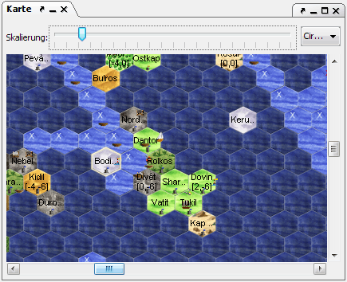

Hier wird eine Karte der bekannten Welt dargestellt.

Bei eingeschaltetem "Fog of War" (FOW) werden Regionen, in denen sich keine eigenen Einheiten befinden oder durchgereist sind, bzw. Ozeanregionen, die man nicht von einem Leuchtturm erblickt, dunkler gezeichnet. Mit der Tastenkombination STRG-W läßt sich der Modus an- und ausschalten.
Klickt man mit der linken Maustaste auf die Karte, wird die betreffende Region in der Regionsanzeige geöffnet. Hält man die Maustaste fest, kann man den Kartenausschnitt verschieben.
Oberhalb der Karte befindet sich ein Schieberegler, mit dem man die Vergrößerung bestimmen kann. Desweiteren können sich dort zwei Drop-Down-Menüs befinden. Eines für Ebenen, falls man Einheiten in mehreren Ebenen hat und eines mit dem man sogenannte HotSpots auswählen kann. Einen HotSpot legt man an, indem man STRG-H drückt und ihm dann einen Namen gibt. Hiermit speichert man die momentane Kartenposition und kann sie über das Drop-Down-Menü jederzeit wieder aufrufen. Befindet man sich über einem HotSpot, so lässt sich dieser mit STRG-Umschalt-H wieder löschen.
Mit einem Linksklick bei gedrückter STRG-Taste lässt sich eine Region markieren, bei gedrückter gehaltener Maustaste auch mehrere. So kann man z.B. einige Regionen markieren, deren Daten man als CR exportieren will. Das Demarkieren erfolgt ebenfalls mit der linken Maustaste bei gedrückter STRG-Taste.
Mit einem Rechtsklick auf eine Region erhält man ein Kontextmenü, dass folgende Auswahlmöglichkeiten bietet: